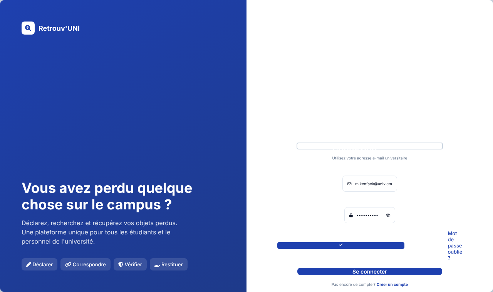
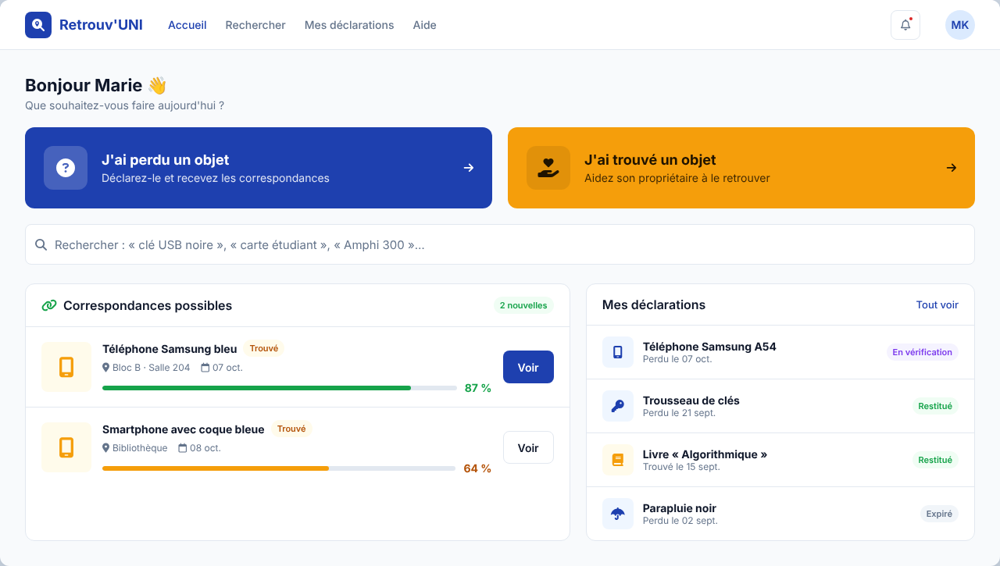
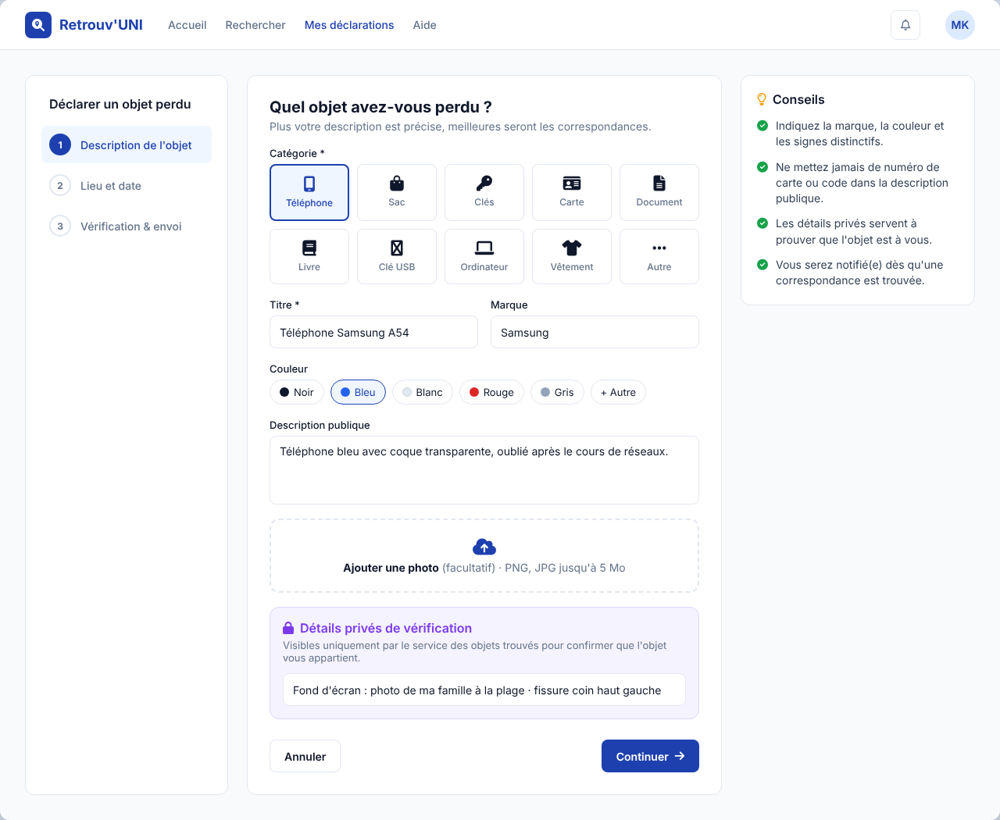
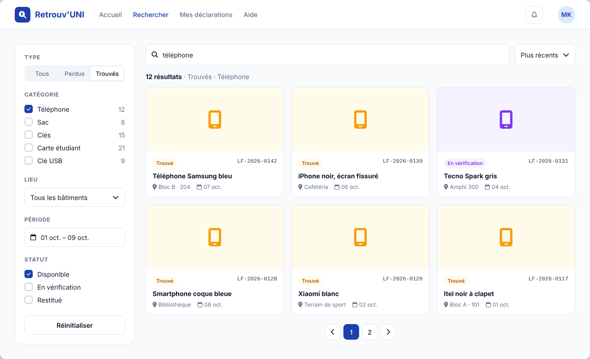
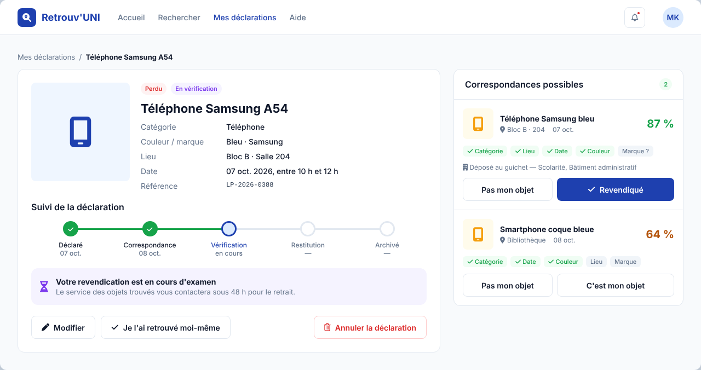
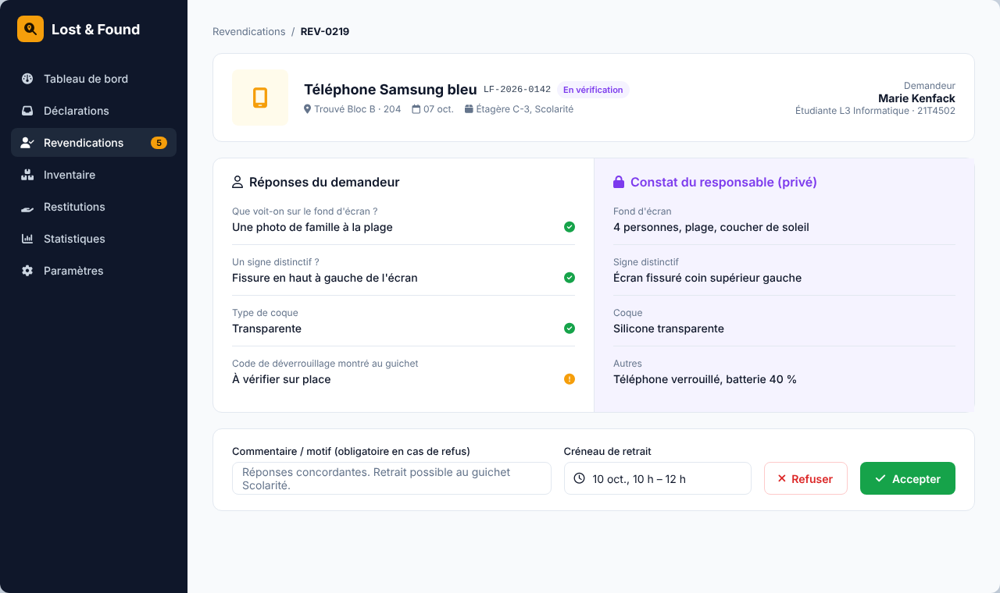
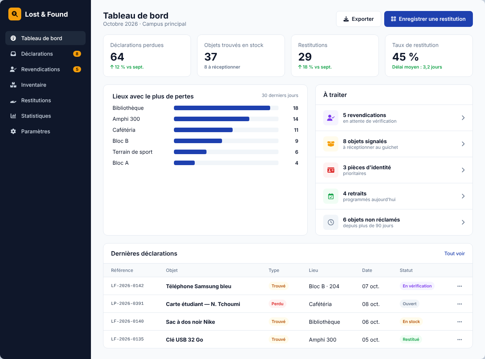
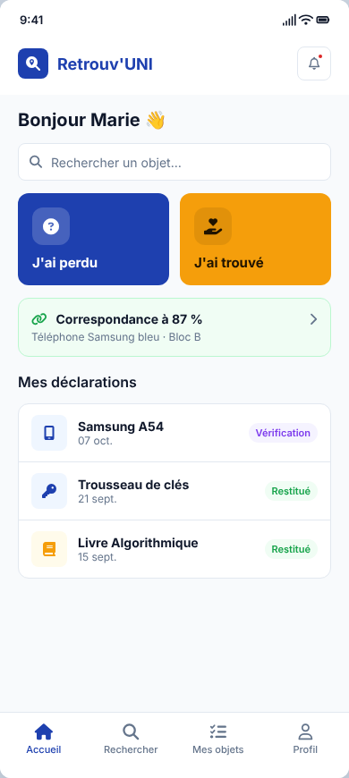
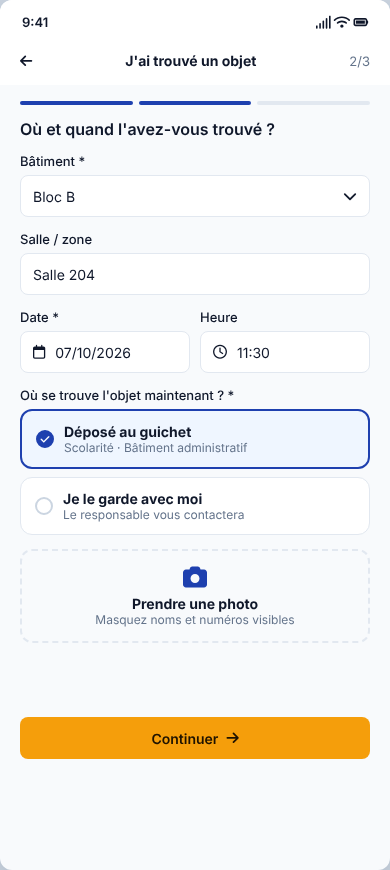

| Project | University Lost and Found System (proposed product name: Retrouv'UNI) |
| Context | University environment (students, staff, lost and found office) |
| Document | Software Requirements Specification |
| Version | 1.0 |
| Date | October 2026 |
| Status | Draft for review |
Since the start of our third year, some of us have lost belongings, or seen others lose them, in classrooms and other campus spaces. A loss is often noticed only later, so nobody knows what happened or whether someone found the item.
Students and staff may lose personal belongings such as phones, bags, keys, student ID cards, documents, books and USB drives. Found items may remain unreported, or be difficult to connect with their owners, because there is no centralized and organized system. The same problem likely exists in other universities and schools.
Provide a centralized platform where users can report lost or found items, search reports, identify possible matches, verify ownership and record the return of recovered items.
Users must be able to:
The scope is deliberately limited to a single business workflow:
We address the information-management problem: how a university can organize lost and found information and facilitate recovery.
| Actor | Description | Main permissions |
|---|---|---|
| Student | Authenticated member of the university | Report lost/found items, search, view matches, claim items, track own reports |
| University staff | Lecturers, administrative staff, cleaning and security staff | Same as students; can drop found items at the desk |
| Lost and found officer | Staff member responsible for the lost and found office | Validate reports, manage physical inventory, verify ownership, record returns, view statistics |
| System administrator | IT team | Manage accounts and roles, categories, locations, settings; view audit logs |
| Visitor (not logged in) | Anyone | View the home page and the public list (limited information) |
Priorities: M = Must (required for v1), S = Should (desirable), C = Could (optional).
| ID | Requirement | Prio |
|---|---|---|
| F-01 | Log in with university e-mail (or student ID number) and password | M |
| F-02 | Registration restricted to university domain addresses, with e-mail confirmation | M |
| F-03 | Password reset | M |
| F-04 | Profile management (name, optional phone, faculty/department, notification preferences) | S |
| F-05 | Single sign-on (university SSO / LDAP) | C |
| ID | Requirement | Prio |
|---|---|---|
| F-10 | Form: category, title, description, colour, brand, estimated date and time range, location (building / room), optional photo | M |
| F-11 | Private verification fields (distinctive mark, contents, serial number, wallpaper…) visible only to the lost and found officer | M |
| F-12 | Edit or cancel the report as long as it is not closed | M |
| F-13 | Mark as "found it myself" to close the report | S |
| ID | Requirement | Prio |
|---|---|---|
| F-20 | Form: category, deliberately partial public description, place and date found, photo (blurring sensitive data recommended) | M |
| F-21 | State where the item is: "I am keeping it" or "dropped at desk X" | M |
| F-22 | The officer confirms physical receipt and assigns an inventory code (e.g. LF-2026-0142) | M |
| F-23 | Identity documents (student ID, national ID card) are flagged as high priority to the officer | S |
| ID | Requirement | Prio |
|---|---|---|
| F-30 | Full-text search with filters: type (lost/found), category, location, period, status | M |
| F-31 | Paginated list of cards showing photo, category, location, date and status | M |
| F-32 | Detailed report page (without private fields) | M |
| F-33 | Sort by date or relevance | S |
| ID | Requirement | Prio |
|---|---|---|
| F-40 | For each new report, the system computes a match score against reports of the opposite type | M |
| F-41 | Criteria: same category (mandatory), date proximity (± 7 days), same building/location, colour, brand, shared keywords | M |
| F-42 | Matches above a threshold (e.g. 60%) are suggested to the reporter and to the officer | M |
| F-43 | Users can mark a match as "Not my item" | S |
| ID | Requirement | Prio |
|---|---|---|
| F-50 | The presumed owner claims a found item and answers verification questions | M |
| F-51 | The officer compares the answers with the private information and accepts or rejects the claim (reason mandatory for rejection) | M |
| F-52 | When accepted, a pick-up appointment is proposed (place, time slot) | M |
| F-53 | Several claims on the same item are handled by the officer; only one can be accepted | M |
| ID | Requirement | Prio |
|---|---|---|
| F-60 | The officer records the return: date, verified identity (document presented), officer, signature/QR code | M |
| F-61 | The linked lost and found reports move to Returned status and are then archived | M |
| F-62 | Searchable history of all reports and returns | M |
| F-63 | Items unclaimed after N days (configurable, e.g. 90): status Unclaimed → donation / disposal / handed to administration | S |
| ID | Requirement | Prio |
|---|---|---|
| F-70 | In-app notifications (bell): new match, claim received, decision, appointment, return | M |
| F-71 | E-mail notifications | S |
| F-72 | SMS / WhatsApp notifications | C |
| ID | Requirement | Prio |
|---|---|---|
| F-80 | Officer dashboard: pending reports, claims to process, items in stock, returns this month | M |
| F-81 | Statistics: locations and periods with the most lost/found items, return rate, average time to return | S |
| F-82 | Management of users, roles, categories, buildings/rooms and desks | M |
| F-83 | CSV/PDF export of registers | S |
| F-84 | Audit log of sensitive actions | M |
| ID | Rule |
|---|---|
| BR-01 | Only an authenticated user can report, claim or receive notifications. |
| BR-02 | A report has exactly one author and belongs to exactly one category. |
| BR-03 | The date an item was lost/found cannot be in the future. |
| BR-04 | Verification information (private fields) is never displayed publicly. |
| BR-05 | A found item can only be returned after a claim has been accepted by the officer. |
| BR-06 | A found item can have only one return. |
| BR-07 | A user cannot claim an item they reported as found themselves. |
| BR-08 | After 3 rejected claims within 30 days, the account is flagged for review. |
| BR-09 | A report with no activity for 90 days becomes Expired (lost) or Unclaimed (found). |
| BR-10 | Every return requires presentation of an identity document or student ID card. |
Lost item: Open → Match found → Under verification → Returned → Archived (or Cancelled / Expired)
Found item: Reported → In stock (received at desk) → Claimed → Under verification → Returned → Archived (or Unclaimed)
| UC | Actor | Description |
|---|---|---|
| UC-01 | Student / Staff | Authenticate |
| UC-02 | Student / Staff | Report a lost item |
| UC-03 | Student / Staff | Report a found item |
| UC-04 | All | Search reports |
| UC-05 | System | Compute and suggest matches |
| UC-06 | Student / Staff | Claim a found item |
| UC-07 | Lost and found officer | Verify ownership |
| UC-08 | Lost and found officer | Record the return |
| UC-09 | Student / Staff | Track the status of own reports |
| UC-10 | Lost and found officer | View statistics |
| UC-11 | System administrator | Manage users, categories and locations |
| Entity | Main attributes |
|---|---|
| User | id, last_name, first_name, email, student_id, phone, role, department, active, created_at |
| Category | id, label (Phone, Bag, Keys, Card, Document, Book, USB drive, Clothing, Other), icon |
| Location | id, building, room/area, campus |
| Desk | id, name, location_id, opening_hours |
| Report | id, type (LOST/FOUND), title, description, colour, brand, event_date, location_id, category_id, author_id, status, desk_id, inventory_code, created_at |
| PrivateDetail | id, report_id, question/hint, value |
| Photo | id, report_id, url |
| Match | id, lost_report_id, found_report_id, score, status (SUGGESTED/REJECTED/CONFIRMED) |
| Claim | id, found_report_id, claimant_id, answers, status (PENDING/ACCEPTED/REJECTED), reason, processed_by, date |
| Return | id, claim_id, officer_id, document_presented, date, signature |
| Notification | id, user_id, type, message, read, date |
| AuditLog | id, user_id, action, entity, entity_id, date |
Key relationships: a User has 0..n Reports; a Report has 0..n Photos and PrivateDetails; a found Report has 0..n Claims; an accepted Claim has 0..1 Return.
| ID | Category | Requirement |
|---|---|---|
| NF-01 | Security | Hashed passwords (bcrypt/argon2), mandatory HTTPS, protection against CSRF, XSS and SQL injection |
| NF-02 | Privacy | Compliance with personal data protection principles; data minimisation; private fields encrypted |
| NF-03 | Access control | Role-based access control (RBAC) enforced server-side |
| NF-04 | Performance | Response time under 2 s for 95% of requests; search under 1 s over 10,000 reports |
| NF-05 | Availability | 99% during academic periods; daily database backup |
| NF-06 | Usability | Responsive, mobile-first interface; a report can be completed in under 2 minutes |
| NF-07 | Accessibility | WCAG 2.1 AA contrast, keyboard navigation, labelled form fields |
| NF-08 | Languages | English and French |
| NF-09 | Maintainability | Version-controlled code (Git), layered architecture, automated tests of business rules |
| NF-10 | Traceability | Audit log of approvals, rejections and returns |
[Browser] ⇄ [Web frontend] ⇄ [REST API] ⇄ [Database]
│
├── Matching service (scoring)
├── Photo storage
└── E-mail / notification service
| Element | Choice |
|---|---|
| Primary colour | Academic blue #1E40AF |
| Secondary colour | Amber #F59E0B ("found" actions, highlights) |
| Success | #16A34A (Returned) |
| Alert | #DC2626 (Lost, rejection) |
| Neutrals | #0F172A text · #64748B secondary text · #E2E8F0 borders · #F8FAFC background |
| Typography | Inter — headings 600/700, body 400; sizes 12 / 14 / 16 / 20 / 28 / 36 px |
| Corner radius | 8 px (inputs, buttons), 12 px (cards) |
| Spacing | 4 px grid (4, 8, 12, 16, 24, 32, 48) |
| Icons | Font Awesome |
| Status badges | Lost (red), Found (amber), Under verification (violet), Returned (green), Archived (grey) |
High-fidelity mockups are provided in maquettes/index.html and can be imported into Figma as editable layers. Each screen is a 1280 px (desktop) or 390 px (mobile) frame.
| # | Screen | Actor | Content |
|---|---|---|---|
| S1 | Login | All | Logo, university e-mail, password, sign-up link |
| S2 | Home / Dashboard | Student | "I lost" / "I found" buttons, search bar, matches, my reports |
| S3 | Report a lost item | Student | Step-by-step form, category tiles, location, date, photo, private details |
| S4 | Search | All | Side filters, card grid, status badges |
| S5 | Report details + matches | Student | Item sheet, status timeline, scored matches, "This is my item" button |
| S6 | Ownership verification | Officer | Side-by-side comparison of claimant answers vs private details, accept / reject |
| S7 | Officer dashboard | Officer | KPIs, chart by location, task queue, return recording |
| S8 | Mobile version | Student | Home and reporting on a 390 px screen |
maquettes/index.html (hosted, e.g. via GitHub Pages, or pasted into the plugin's HTML import).Mockup labels are currently in French; they will be localised to English (requirement NF-08).









| Phase | Deliverables | Duration |
|---|---|---|
| 1. Analysis | Requirements specification, feasibility study, business rules | 2 weeks |
| 2. Design | Use cases, conceptual/logical data model, architecture, Figma mockups | 3 weeks |
| 3. Development | Authentication, reports, search, matching, verification, return, administration | 6 weeks |
| 4. Testing | Unit, integration and user acceptance tests | 2 weeks |
| 5. Deployment | Go-live, user guide, final presentation | 1 week |
The scope is defined around one workflow: Report → Search/Match → Verify → Return → Record. We do not promise to recover stolen items; we address the information-management problem of how a university can organize lost and found information and facilitate recovery.
This scope provides enough material for requirements analysis, a feasibility study, business rules, use cases, database design, system architecture, interface design, testing and deployment planning, using web technologies the team already masters.